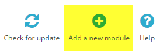

Setting up on PrestaShop
This document outlines the steps needed to install Oxipay on your PrestaShop store.
Supported Tech Stacks
Oxipay has been tested against the following tech stacks:
| Prestashop Version | Operating System | SQL | PHP Version | Web Server |
|---|---|---|---|---|
| 1.6.1.3 | Ubuntu 14.04.3 LTS | MySQL 5.6.27 | 5.5.30 | Apache 2.4.17 |
| 1.6.1.13 | Ubuntu 14.04.5 LTS | MySQL 5.5.54 | 5.5.9 | Apache 2.4.7 |
Oxipay is not compatible with PrestaShop 1.7 at the moment
Plugin Installation
The plugin can be installed automatically via PrestaShop's admin panel. This section details how to upload and install the plugin, and configure its various parameters for it to work properly.
Installation Procedure
1 - Navigate to the following URL and select the zip file to download the Oxipay plugin.
For PrestaShop 1.6
https://github.com/oxipay/oxipay-prestashop-1.6/releases
For PrestaShop 1.7
Oxipay is not compatible with PrestaShop 1.7 at the moment.
2 - Log into your PrestaShop's admin area.
3 - Once logged in, you will be presented with your store's dashboard. From the side menu that appears to the left, click on Modules and Services.

6 - Scroll to the top of the page and then click on the Add a new module icon. This will open up the Add a new module panel.

7 - From within the Add a new module panel, click on Choose a file. This will allow you to specify the folder or directory that contains the Oxipay .zip plugin. Once selected, click on Upload this module.
8 - If the upload of the plugin was successful, you will be presented with a success alert at the top of the page.

9 - Scroll downwards to bring the Modules List panel into focus, and you will find Oxipay Plugin in the modules list.

10 - Click on the green Install button next to the Oxipay PrestaShop listing.
11 - Click on the orange Proceed with the Installation button. (This message is displayed because the module you are installing was uploaded from your computer, rather than through PrestaShop's module marketplace.)

12 - After the installation, you will be re-directed to the the Oxipay module configuration page with a message at the top of the page indicating that the module was installed successfully.

Configuration
Immediately after installing the Oxipay plugin, you would be automatically re-directed to the plugin settings page. Otherwise, you can bring up this page by going to the Modules and Services page, finding the oxipay listing, and clicking the Configure button next to it.
1 - Title: This configures the plugin title that gets displayed to the end user during checkout. By default it is configured to Oxipay.
2 - Logo: This controls the Oxipay Logo that gets displayed.
3 - Description: This configures the plugin description text that gets displayed to the end user as part of the checkout process. By default, it is configured to Breathe easy with Oxipay, an interest-free instalment payment plan.
4 - Oxipay Gateway URL: This specifies the Oxipay gateway that the plugin would need to communicate with for it to be able to process payments via Oxipay.
| Oxipay Environment | URL |
|---|---|
| Production Gateway | https://secure.oxipay.com.au/Checkout?platform=Default |
| Sandbox Gateway | https://securesandbox.oxipay.com.au/Checkout?platform=Default |
5 - Merchant ID: This is the Oxipay Merchant ID that you are provided with as part of your on-boarding when signing-up for Oxipay.
6 - API Key: The API Key or the Encryption key is a case-sensitive alpha-numeric sequence that is used to authenticate payment requests originating from your store. It is vital that you protect it and don't provide it to unauthorised individuals.
Once you have finished making the necessary configuration changes or updates, click the Save button on the bottom left.
Upgrading Oxipay
You can upgrade your Oxipay PrestaShop plugin by uninstalling the old one and installing the newer version.
To uninstall the Oxipay plugin you need to:
1 - Locate the Oxipay plugin in the Modules and Services page
2 - From the drop-down menu that appears, click Delete.

3 - Click OK when asked whether you are sure to premanently remove the plugin. Once the uninstallation is completed, you will be presented with a success message at the top of the page similar to the one shown in the screenshot below.
4 - You can now download the newer version of the Oxipay PrestaShop plugin and install it as per the instructions in the Installing Oxipay section of this document.